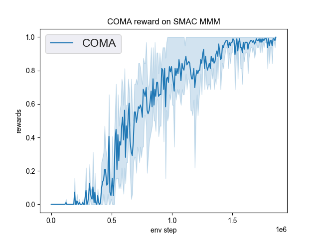
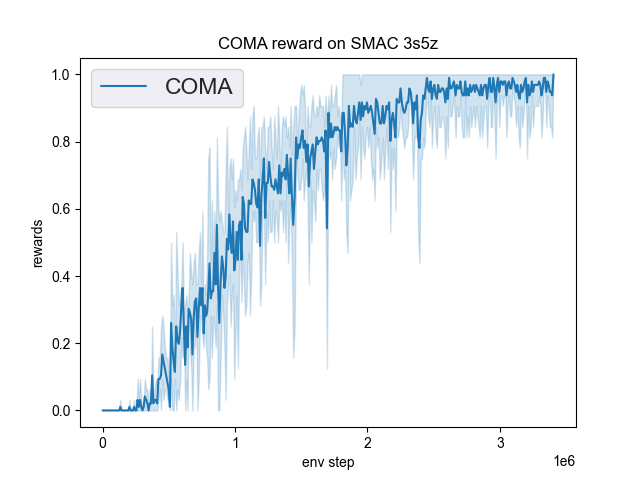

COMA¶
Overview¶
COMA (Foerster et al. 2018), counterfactual multi-agent policy gradients, is a multi-agent actor critic based approach to learn a fully centralized state action function and use it to guide the optimization of decentralized policies. COMA uses a centralized critic to train decentralized actors for individual agents, estimating a counterfactual advantage function for each agent in order to address multi-agent credit assignment. A counterfactual baseline is used in COMA to marginalizes out a single agent’s action, while keeping the other agents’ actions fixed, and the centralized critic representation allows the counterfactual baseline to be computed efficiently.
Quick Facts¶
COMA uses the paradigm of centralized training with decentralized execution.
COMA is a model-free and actor critic method.
COMA focus on settings with discrete actions. COMA can be extended to continuous actions spaces by other estimation methods.
COMA uses on-policy policy gradient learning to train critics.
COMA has poor sample efficiency and is prone to getting stuck in sub-optimal local minima.
COMA considers a partially observable setting in which each agent only obtains individual observations. Agents must rely on local action-observation histories during execution.
COMA accepts Independent Actor-Critic as individual value network and speeds learning by sharing parameters among the agents.
Since learning is centralized, the centralized critic in COMA estimates Q-values for the joint action conditioned on the central state.
Key Equations or Key Graphs¶
The overall information flow between the decentralized actors, the environment and the centralized critic in COMA:

COMA computes an advantage function that compares the Q-value for the current action $u^a$ to a counterfactual baseline that marginalises out \(u^a\), while keeping the other agents’ actions \(u^{-a}\) fixed.
The advantage \(A^{a}(s, u)\) computes a separate baseline that uses the centralized critic to find counterfactuals when only \(a\)’s action changes, learned directly from agents’ experiences.
The first term in the equation is the global Q-value of the currently selected action, which indicates the estimated Q-value in centrailed critical. The second term in the equation represents the expectation of global Q-value that can be obtained under all possible selection actions of agent a. The difference between two reflects the advantage of the action selected by the current agent over the average result.
Comparing to the origin single-agent actor-critic algorithm, COMA policy gradient for all agent policies using the above counterfactual advantage:
Note
COMA uses a counterfactual baseline. Each agent learns from a shaped reward that compares the global reward to the reward received when that agent’s action is replaced with a default action.
Extensions¶
COMA takes the advantage of learning a centralized critic to train decentralized actors. Similarly, Gupta et al. (2017) present a centralized actor-critic algorithm learning per-agent critics to opt for better scalability at the cost of diluted benefits of centralization.
MADDPG (Lowe et al. 2017) extends the DDPG framework in multi-agent settings and learns a centralized critic for each agent. These approaches use on-policy policy gradient learning.
COMA-CC (Vasilev et al. 2021) improves COMA by changing its training scheme to use the entire batch of data, rather than mini-batches with a consistent critic. COMA-CC is an off-policy version COMA with an alternative critic. For each counterfactual Q-value computation, the COMA critic requires \(n\) inputs, one for each agent, and the COMA-CC critic requires \(nm\) inputs, one for each agent and counterfactual joint action. To reduce computation, the concatenated observations \((z^1_t, ..., z^n_t)\) is compressed via an encoding network before used as inputs to the critic.
Implementations¶
The default config is defined as follows:
The network interface COMA used is defined as follows:
The Benchmark result of COMA in SMAC (Samvelyan et al. 2019), for StarCraft micromanagement problems, implemented in DI-engine is shown.
smac map |
best mean reward |
evaluation results |
config link |
comparison |
|---|---|---|---|---|
MMM |
1.00 |
 | Pymarl(0.1) |
|
3s5z |
1.00 |
 | Pymarl(0.0) |
We did not show the performance curve of COMA at 5m_vs_6m map because COMA can’t converge under this map, and the original author’s COMA algorithm also can’t converge under this map.
References¶
Jakob Foerster, Gregory Farquhar, Triantafyllos Afouras, Nantas Nardelli, Shimon Whiteson. Counterfactual Multi-Agent Policy Gradients. In Proceedings of the Thirty-Second AAAI Conference on Artificial Intelligence, 2018.
Jayesh K. Gupta, Maxim Egorov, Mykel Kochenderfer. Cooperative multi-agent control using deep reinforcement learning. International Conference on Autonomous Agents and Multiagent Systems, 2017.
Ryan Lowe, Yi Wu, Aviv Tamar, Jean Harb, Pieter Abbeel, Igor Mordatch. Multi-agent actor-critic for mixed cooperative-competitive environments. arXiv preprint arXiv:1706.02275, 2017.
Mikayel Samvelyan, Tabish Rashid, Christian Schroeder de Witt, Gregory Farquhar, Nantas Nardelli, Tim G. J. Rudner, Chia-Man Hung, Philip H. S. Torr, Jakob Foerster, Shimon Whiteson. The StarCraft Multi-Agent Challenge. arXiv preprint arXiv:1902.04043, 2019.
Bozhidar Vasilev, Tarun Gupta, Bei Peng, Shimon Whiteson. Semi-On-Policy Training for Sample Efficient Multi-Agent Policy Gradients. arXiv preprint arXiv:2104.13446, 2021.